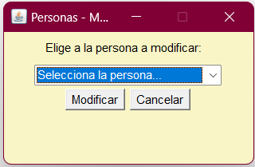

Introducción
Este
documento es un Manual de Usuario del programa de gestión de una
academia de inglés. El manual tiene como objetivo explicar al
usuario el funcionamiento del programa de la academia en cuanto a la
alta, baja, modificación y consulta tanto de los datos de personas y
libros como de las relaciones entre ellos.
El programa de gestión se conecta a una base de datos de la academia, donde hay una tabla de libros,
una tabla de personas y una tabla de relaciones entre las personas y los libros. Hay dos tipos de usuarios
que pueden entrar en el programa – el usuario básico y el administrador. A través del programa el usuario
Administrador puede dar de alta, consultar, modificar y/o dar de baja a una persona, un libro o una relación
entre ellos en la base de datos, mientras el usuario básico solo puede dar de alta a una persona, un libro o una
relación entre ellos.
Login
Al
abrir el programa, nos aparecerá una ventana de Login donde hay que
introducir el nombre del usuario y abajo su clave correspondiente. La
clave estará ocultada con el signo de asterisco ‘*’ por cada
carácter introducido.
En
el caso de que el usuario introduzca el nombre o la clave incorrecta
o deje algún campo vacío, aparecerá otra ventana con un mensaje de
error.
Como hemos dicho antes, hay dos tipos de usuarios – el Administrador que tiene el acceso a todas las funciones del programa (las altas, bajas, modificaciones y consultas) y el Usuario que solo puede dar de alta.
Una vez introducido el nombre del usuario y su clave, hay que pulsar el botón ‘Acceder’. Lo podemos hacer con el botón, o bien con la tecla Enter (después de pulsar la tecla tabulador), tanto aquí en la ventana de Login, como en todo el programa. Así accedemos el Menú Principal del programa.
Cabe mencionar que al entrar en el sistema, todas las operaciones, incluyendo la entrada y salida de la sesión, se guardarán en el fichero historico.log con las informaciones de la fecha y la hora, el usuario y la operación que ha realizado.
Personas / Libros – Alta
En la ventana de alta podemos insertar los datos de una persona, por ejemplo un nuevo alumno, o de un libro usado en la academia.
La ventana de alta es muy sencilla. En cada campo de texto hay que introducir algunos datos; en el caso de alta de persona, son datos personales como nombre, apellidos, teléfono, correo electrónico y dirección.
No es posible introducir la misma persona más de una vez. En el caso de que el correo electrónico que hayamos escrito corresponda al correo de una persona que ya aparezca en la base de datos, el programa no nos dejaría dar de alta a esta persona.
En cuanto a libros, se debe introducir el nombre del libro, el nivel de inglés, autor o autores y editorial.
No es posible introducir el mismo libro más de una vez. El programa verificará si el nombre del libro corresponde a algún libro de la base de datos y en el caso de que sí, no nos dejaría dar de alta a este libro.
En ambos casos, si intentemos dar de alta a una persona o un libro que ya existe en la base de datos, nos aparecerá una ventana nueva con un mensaje así:
De igual forma será comprobado en el caso de libros.
No se puede dejar ningún campo sin rellenar. Si intentamos hacerlo, nos dará un mensaje así:
Si en vez de un número, introducimos una cadena de caracteres, también saldría un mensaje de error:
Para vaciar todos los campos, hay que pulsar el botón ‘Borrar’.
Cuando tenemos todos los campos correctamente rellenados, pulsamos ‘Aceptar’ para enviar los datos a la base de datos.
Una vez hecho el alta y cerrado el mensaje de que la operación se ha ejecutado correctamente, nos quedará la ventana de alta con todos los campos vacíos para introducir el siguiente registro.
Personas / Libros – Consulta
La opción de consultar los datos de personas y libros de la academia solo está disponible para el administrador.
La consulta se puede acceder desde el menú principal pulsando o Personas o Libros y luego en el menú desplegable ‘Consulta’. Aparecerá una venta así:
Se debe mencionar que no es posible distorsionar ninguna de las ventanas del programa. No obstante, en el caso de consulta donde normalmente se muestran muchos datos, se puede usar la barra de desplazamiento, tanto horizontal como vertical.
Al pulsar el botón ‘PDF’ o ‘EXCEL’, se generaría y se abriría inmediatamente un archivo de formato PDF o Excel, respectivamente.
Personas / Libros – Modificación
La opción de modificar los datos de personas y de libros de la academia solo está disponible para el administrador.
Para modificar los datos de una persona o un libro que ya existe en la base de datos, accedemos a la ventana de modificación desde el menú principal.
Una vez abierta esta ventana, hay que seleccionar la persona cuyos datos queremos modificar.

Si pulsamos el botón ‘Cancelar’, volveríamos al menú principal.
Si pulsamos el botón ‘Modificar’ sin haber elegido ninguna opción (es decir, dejando lo que aparece por defecto), saldría la ventana con un aviso.
Si pulsamos el botón ‘Modificar’ después de seleccionar alguna persona, abrirá una ventana con todos los datos de esta persona.
Aquí podemos editar cualquier campo, menos el identificador que no se puede modificar. Similar a la ventana de alta, es obligatorio rellenar todos los campos.
Una vez hemos terminado de editar los datos, damos a ‘Aceptar’. Nos saldrá un mensaje de confirmación.

En el caso de que no estemos seguros de la modificación, podemos pulsar ‘No’. De esta manera volveríamos a la ventana de modificación. Si ya estamos seguros de las nuevas modificaciones pulsamos ‘Sí’.
El proceso es igual en cuanto a la modificación de un libro.
Personas / Libros – Baja
La opción ‘Baja’ de los datos de personas y de libros de la academia solo está disponible para el administrador.
Para llegar a la ventana de baja, hay que pulsar ‘Baja’ en el menú desplegable de ‘Personas’ o ‘Libros’ en la ventana principal.
Una vez pulsada la baja, se mostrará una ventana de baja donde, desde la lista desplegable, hay que elegir una persona (o en el caso de libros – un libro) a eliminar de la base de datos.
Si pulsamos ‘Cancelar’, volveríamos al menú principal.
Si pulsamos el botón ‘Eliminar’ sin haber elegido ninguna opción (es decir, dejando lo que aparece por defecto), saldría la ventana con un aviso.
Habiendo seleccionado una persona, pulsamos ‘Eliminar’. Nos aparecerá otra ventana de confirmación con el nombre y apellidos de la persona elegida.
Pulsando ‘No’ volveríamos a la ventana donde se puede elegir una persona. Si pulsamos ‘Sí’ nos saldría uno de dos posible resultados:
- la baja se ha realizado con éxito
- o que no era posible por alguna razón dar de baja
El proceso es igual en cuanto a la modificación de un libro.
Relación Personas-Libros: Alta
En la ventana de Alta de Personas-Libros, podemos introducir una relación entre una persona y un libro. Para hacerlo, hay que seleccionar en el primer menú desplegable una persona cuyo registro ya existe en el sistema y en el segundo menú desplegable un libro, el cual también ya existe en el sistema. Una vez seleccionados la persona y el libro, pulsamos ‘Aceptar’.
No es posible dar de alta a una relación que ya aparece en el sistema. Por lo cual, si elegimos una persona y un libro que ya están relacionados entre sí, nos aparecerá una ventana con el siguiente mensaje:
En el caso de pulsar el botón ‘Aceptar’ sin haber seleccionado o una persona, o un libro, o ambos, saldrá un mensaje de error así:
Si por alguna razón la alta no se realiza correctamente, aparecerá un mensaje de error siguiente:
Cuando la alta de la relación entre una persona y un libro se ejecuta correctamente, veríamos este mensaje:
Relación Personas-Libros: Consulta
La opción de consultar los datos de la relación persona-libro de la academia solo está disponible para el administrador.
La consulta de las relaciones entre personas y libros se puede acceder desde el menú principal pulsando ‘Personas-Libros’ y luego en el menú desplegable ‘Consulta’. Aparecerá una ventana así:
No es posible redimensionar esta ventana. Sin embargo, en el caso de que haya muchos datos a mostrar, se puede usar la barra de desplazamiento, tanto horizontal como vertical.
Además, se puede generar un archivo de formato PDF o Excel al pulsar los botones en la parte inferior, respectivamente. Una vez pulsado el botón, se abrirá un fichero en el formato elegido.
Relación Personas-Libros: Modificación
La opción de modificar los datos de la relación persona-libro de la academia solo está disponible para el administrador.
Para modificar los datos de una relación persona-libro existente, es decir cambiar una persona por otra o cambiar un libro por otro, accedemos a la ventana de modificación desde el menú principal.
Una vez abierta esta ventana, hay que seleccionar la relación que queremos modificar desde el menú desplegable.
Si pulsamos el botón ‘Cancelar’, volveríamos al menú principal.
Si pulsamos en botón modificar sin haber elegido ninguna de las opciones, saldría una ventana con un aviso.
Una vez elegida la relación, pulsamos al botón ‘Modificar’.
En la siguiente ventana que nos aparece podemos seleccionar de las listas desplegables o una persona diferente, o un libro diferente, o incluso ambos.
Cabe mencionar que la persona y el libro que se muestra por defecto son la persona y el libro de la relación que hemos seleccionado en la ventana anterior.
Si pulsamos el botón ‘Cancelar’, volveríamos a la ventana anterior donde hay que seleccionar una relación.
Si pulsamos el botón ‘Aceptar’, nos saldría una ventana de confirmación donde podemos comprobar los cambios.
En el caso de que dejemos la misma persona y el mismo libro y pulsemos ‘Sí’, nos aparecerá un mensaje de que esta relación ya existe y nos llevará a la primera ventana de modificación.
Si en la ventana de confirmación pulsamos ‘No’, volveríamos a la ventana anterior donde podemos modificar la relación eligiendo una persona y un libro desde el menú desplegable.
Una vez que introducimos los cambios necesarios y pulsamos a ‘Sí’, nos saldrá un aviso siguiente:
Si por alguna razón la modificación no se realiza correctamente, aparecerá un mensaje de error siguiente:
Relación Personas-Libros: Baja
La opción de ‘Baja’ de la relación persona-libro de la academia solo está disponible para el administrador.
Para llegar a la ventana de baja, hay que pulsar ‘Baja’ en el menú desplegable de ‘Personas-Libros’ en la ventana principal.
Al pulsar la ‘Baja’, nos aparecerá una ventana donde podemos seleccionar la relación a la cual queremos dar de baja.
Si pulsamos ‘Cancelar’, volveríamos a la ventana de menú principal.
Si pulsamos ‘Eliminar’ sin haber seleccionado ninguna relación, nos aparecerá un aviso siguiente:
Cuando seleccionamos una relación que queremos borrar y pulsamos ‘Eliminar’, nos saldrá una ventana de confirmación.
Si pulsamos ‘No’, el programa nos llevaría a la ventana anterior donde podemos elegir una relación otra vez.
Si pulsamos ‘Sí’ nos saldría uno de dos posibles resultados:
- la baja se ha realizado con éxito
- o que no era posible por alguna razón dar de baja